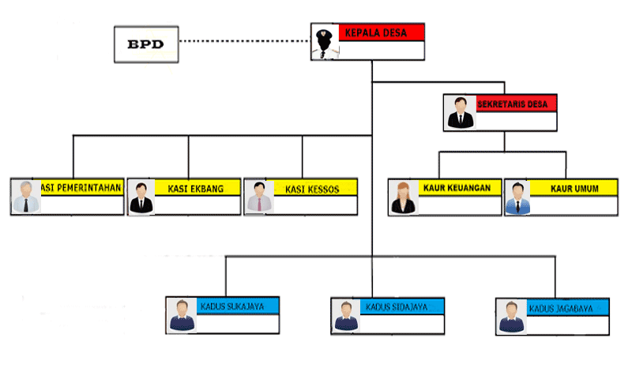
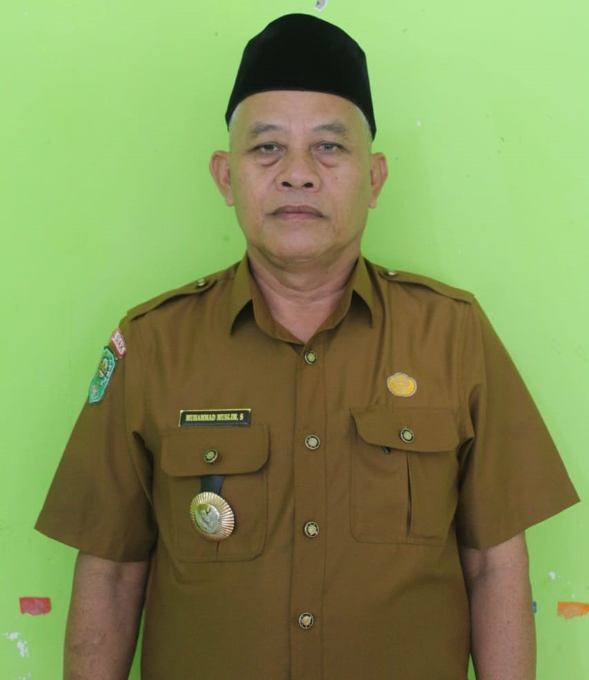

Struktur Organisasi


Kepala Desa
| Jabatan | : KEPALA DESA |
| Nama Pejabat | : H. M. MUSLIM SARAGIH, SP |
| Nama Lengkap | : H. MUHAMMAD MUSLIM SARAGIH, SP |
| Tempat/Tgl Lahir | : D. Sinumba, 17 April 1970 |
| Alamat | : Jl. Durian RT002 RK002 Rantau Bertuah |
| Tingkat Pendidikan | : S1 |
Kepala desa adalah jabatan kepemimpinan pemerintahan di tingkat desa atau kelurahan. Sebagai kepala desa, seseorang memiliki tanggung jawab utama untuk mengelola pemerintahan desa, melaksanakan kebijakan pemerintah, serta memajukan kesejahteraan dan pembangunan di wilayah desa yang dipimpinnya.
Tugas-tugas kepala desa meliputi berbagai hal, antara lain:
- Administrasi Desa: Mengelola administrasi desa, termasuk pendataan penduduk, kepemilikan lahan, dan administrasi keuangan desa.
- Pembangunan Desa: Berperan dalam perencanaan dan pelaksanaan pembangunan infrastruktur, pengembangan sektor pertanian, pendidikan, kesehatan, dan lainnya.
- Penyelenggaraan Pelayanan Masyarakat: Menyelenggarakan layanan masyarakat seperti administrasi kependudukan, perizinan, dan pelayanan sosial.
- Pengawasan dan Penegakan Hukum: Mengawasi kegiatan di desa serta menjaga keamanan dan ketertiban bersama aparat terkait.
- Penghubung Pemerintah dan Masyarakat: Mengkomunikasikan kebijakan pemerintah dan menyampaikan aspirasi masyarakat.
Pemilihan kepala desa biasanya dilakukan melalui pemilihan umum di mana warga desa memiliki hak suara. Masa jabatan kepala desa umumnya enam tahun sebelum dilakukan pemilihan kembali. Dalam melaksanakan tugasnya, kepala desa bekerja sama dengan perangkat desa seperti sekretaris desa, kepala dusun, dan staf administrasi.
BADAN PERMUSYAWARATAN DESA
Badan Permusyawaratan Desa (BPD) adalah lembaga yang berperan penting dalam sistem pemerintahan desa di Indonesia. BPD merupakan wadah bagi partisipasi masyarakat dalam pengambilan keputusan di tingkat desa. Lembaga ini memiliki peran sebagai lembaga legislatif di tingkat desa.
Berikut adalah beberapa poin penting yang menjelaskan tentang Badan Permusyawaratan Desa (BPD):
- Fungsi: Fungsi utama BPD adalah sebagai lembaga perwakilan masyarakat desa yang memiliki kewenangan dalam proses pengambilan keputusan. BPD berperan dalam menyusun, mempesahkan, dan mengawasi pelaksanaan peraturan desa. Lembaga ini juga berperan dalam mengawasi dan mengontrol pelaksanaan kebijakan pemerintah desa.
- Anggota: BPD terdiri dari anggota yang dipilih langsung oleh masyarakat desa dalam musyawarah desa. Jumlah anggota BPD dapat bervariasi tergantung pada ukuran dan kebutuhan desa, tetapi umumnya terdiri dari beberapa orang yang mewakili berbagai wilayah atau dusun di desa tersebut.
- Masa Jabatan: Anggota BPD memiliki masa jabatan yang ditetapkan dalam peraturan desa. Umumnya, masa jabatan BPD berlangsung selama enam tahun, sesuai dengan masa jabatan kepala desa. Setelah masa jabatan berakhir, dilakukan pemilihan ulang untuk membentuk BPD yang baru.
- Kewenangan: BPD memiliki kewenangan dalam proses pembentukan peraturan desa atau peraturan kepala desa. Mereka memiliki hak untuk memberikan persetujuan atau usulan terhadap rancangan peraturan desa yang diajukan oleh kepala desa. Selain itu, BPD juga memiliki kewenangan untuk mengawasi penggunaan anggaran desa dan pelaksanaan program pembangunan desa.
- Musyawarah Desa: Musyawarah desa merupakan forum penting dalam sistem pemerintahan desa di Indonesia. BPD memiliki peran dalam mengorganisir dan memfasilitasi musyawarah desa. Dalam musyawarah desa, berbagai kebijakan dan keputusan penting dibahas dan diputuskan secara kolektif oleh masyarakat desa.
- Hubungan dengan Kepala Desa: BPD memiliki hubungan kerja yang erat dengan kepala desa. Kepala desa wajib bekerja sama dengan BPD dan meminta persetujuan atau masukan mereka dalam proses pengambilan keputusan. Keputusan kepala desa yang signifikan juga harus disampaikan kepada BPD untuk mendapatkan persetujuan atau tanggapan.
Peran BPD dalam sistem pemerintahan desa adalah untuk memastikan partisipasi masyarakat dalam proses pengambilan keputusan yang berdampak langsung pada pembangunan dan kesejahteraan desa. Melalui BPD, aspirasi dan kepentingan masyarakat desa dapat didengar dan diwakili dalam kebijakan dan program yang dilaksanakan di tingkat desa.

Sekretaris Desa
| Jabatan | : SEKRETARIS DESA |
| Nama Pejabat | : LILI PERTIWI, S.Sos |
| Nama Lengkap | : LILI PERTIWI, S.Sos |
| Tempat/Tgl Lahir | : Minas, 24 Januari 1992 |
| Alamat | : Jl. Sukun RT002 RK003 Rantau Bertuah |
| Tingkat Pendidikan | : S1 |
Kaur Umum dan Perencanaan
| Jabatan | : KAUR UMUM DAN PERENCANAAN |
| Nama Pejabat | : SRI MAYANG SARI, S.AP |
| Nama Lengkap | : SRI MAYANG SARI, S.AP |
| Tempat/Tgl Lahir | : Minas, 12 Juli 1995 |
| Alamat | : Jl. Sukun RT001 RK003 Rantau Bertuah |
| Tingkat Pendidikan | : S1 |
Staff Kaur Umum
| Jabatan | : STAFF KAUR UMUM |
| Nama Pejabat | : YENTI LESMA, S.Pd |
| Nama Lengkap | : YENTI LESMA, S.Pd |
| Tempat/Tgl Lahir | : Bantaian, 27 September 1992 |
| Alamat | : Jl. Sukun RT001 RK003 Rantau Bertuah |
| Tingkat Pendidikan | : S1 |
Kaur Keuangan / Bendahara
| Jabatan | : KAUR KEUANGAN/BENDAHARA |
| Nama Pejabat | : RETNO IRAWAN, SP |
| Nama Lengkap | : RETNO IRAWAN, SP |
| Tempat/Tgl Lahir | : Minas, 15 Maret 1997 |
| Alamat | : Jl. Sukun RT001 RK003 Rantau Bertuah |
| Tingkat Pendidikan | : S1 |
Juru Tulis I
| Jabatan | : JURU TULIS I |
| Nama Pejabat | : EKA NURSANI, S.Sos |
| Nama Lengkap | : EKA NURSANI, S.Sos |
| Tempat/Tgl Lahir | : Minas, 19 Maret 1985 |
| Alamat | : Jl. Durian RT002 RK002 Rantau Bertuah |
| Tingkat Pendidikan | : S1 |
Juru tulis kampung adalah sebutan yang umumnya digunakan di Indonesia untuk mengacu pada seorang pekerja atau staf administratif yang bertugas di tingkat kampung atau desa. Juru tulis kampung sering kali bekerja di kantor kampung atau pusat pemerintahan setempat. Peran dan tanggung jawab juru tulis kampung dapat bervariasi tergantung pada kebutuhan dan tugas yang diberikan oleh pemerintah desa atau kampung.
Berikut adalah beberapa tugas umum yang dapat dilakukan oleh seorang juru tulis kampung:
- Administrasi dan Perekaman Data: Juru tulis kampung bertanggung jawab dalam menjalankan tugas administratif di tingkat kampung. Mereka dapat menyimpan dan mengelola dokumen-dokumen administratif seperti surat-surat, keputusan kampung, laporan-laporan, dan data penduduk. Mereka juga dapat mencatat dan memperbarui data kependudukan serta melakukan pencatatan dan perekaman terkait kegiatan dan peristiwa di kampung.
- Pelayanan Publik: Juru tulis kampung dapat memberikan pelayanan publik kepada masyarakat setempat. Mereka menerima dan menangani permintaan, pengaduan, dan pertanyaan dari masyarakat terkait kegiatan kampung atau kebutuhan pelayanan dasar seperti surat keterangan, pengurusan izin, atau informasi tentang program dan kegiatan kampung.
- Koordinasi Kegiatan: Juru tulis kampung dapat berperan dalam koordinasi kegiatan dan acara di kampung. Mereka dapat membantu mengorganisir rapat-rapat kampung, mengatur jadwal kegiatan, menyusun agenda, dan memastikan kelancaran pelaksanaan kegiatan atau acara yang diselenggarakan oleh kampung.
- Pemberdayaan Masyarakat Juru tulis kampung dapat terlibat dalam program-program pemberdayaan masyarakat di kampung. Mereka dapat membantu dalam menyelenggarakan kegiatan pelatihan, penyuluhan, atau pertemuan masyarakat yang bertujuan untuk meningkatkan pengetahuan dan keterampilan masyarakat.
- Pendampingan Kepala Kampung: Juru tulis kampung dapat mendampingi kepala kampung dalam menjalankan tugas-tugasnya. Mereka dapat membantu kepala kampung dalam menyusun keputusan kampung, mengorganisir pertemuan, menyusun laporan-laporan, dan memberikan masukan atau saran dalam pengambilan keputusan di tingkat kampung.
Peran juru tulis kampung sangat penting dalam menjaga kelancaran administrasi dan pelayanan publik di tingkat kampung atau desa. Mereka membantu dalam mengelola data, memberikan pelayanan kepada masyarakat, dan mendukung pengambilan keputusan oleh kepala kampung. Dengan adanya juru tulis kampung, diharapkan pelayanan kepada masyarakat dapat lebih terorganisir dan efisien di tingkat kampung atau desa.
Juru Tulis II
| Jabatan | : JURU TULIS II |
| Nama Pejabat | : SUMIATI |
| Nama Lengkap | : SUMIATI |
| Tempat/Tgl Lahir | : Duri, 17 November 1978 |
| Alamat | : Jl. Cempedak RT002 RK004 Rantau Bertuah |
| Tingkat Pendidikan | : SMA |
Juru tulis kampung adalah sebutan yang umumnya digunakan di Indonesia untuk mengacu pada seorang pekerja atau staf administratif yang bertugas di tingkat kampung atau desa. Juru tulis kampung sering kali bekerja di kantor kampung atau pusat pemerintahan setempat. Peran dan tanggung jawab juru tulis kampung dapat bervariasi tergantung pada kebutuhan dan tugas yang diberikan oleh pemerintah desa atau kampung.
Berikut adalah beberapa tugas umum yang dapat dilakukan oleh seorang juru tulis kampung:
- Administrasi dan Perekaman Data: Juru tulis kampung bertanggung jawab dalam menjalankan tugas administratif di tingkat kampung. Mereka dapat menyimpan dan mengelola dokumen-dokumen administratif seperti surat-surat, keputusan kampung, laporan-laporan, dan data penduduk. Mereka juga dapat mencatat dan memperbarui data kependudukan serta melakukan pencatatan dan perekaman terkait kegiatan dan peristiwa di kampung.
- Pelayanan Publik: Juru tulis kampung dapat memberikan pelayanan publik kepada masyarakat setempat. Mereka menerima dan menangani permintaan, pengaduan, dan pertanyaan dari masyarakat terkait kegiatan kampung atau kebutuhan pelayanan dasar seperti surat keterangan, pengurusan izin, atau informasi tentang program dan kegiatan kampung.
- Koordinasi Kegiatan: Juru tulis kampung dapat berperan dalam koordinasi kegiatan dan acara di kampung. Mereka dapat membantu mengorganisir rapat-rapat kampung, mengatur jadwal kegiatan, menyusun agenda, dan memastikan kelancaran pelaksanaan kegiatan atau acara yang diselenggarakan oleh kampung.
- Pemberdayaan Masyarakat Juru tulis kampung dapat terlibat dalam program-program pemberdayaan masyarakat di kampung. Mereka dapat membantu dalam menyelenggarakan kegiatan pelatihan, penyuluhan, atau pertemuan masyarakat yang bertujuan untuk meningkatkan pengetahuan dan keterampilan masyarakat.
- Pendampingan Kepala Kampung: Juru tulis kampung dapat mendampingi kepala kampung dalam menjalankan tugas-tugasnya. Mereka dapat membantu kepala kampung dalam menyusun keputusan kampung, mengorganisir pertemuan, menyusun laporan-laporan, dan memberikan masukan atau saran dalam pengambilan keputusan di tingkat kampung.
Peran juru tulis kampung sangat penting dalam menjaga kelancaran administrasi dan pelayanan publik di tingkat kampung atau desa. Mereka membantu dalam mengelola data, memberikan pelayanan kepada masyarakat, dan mendukung pengambilan keputusan oleh kepala kampung. Dengan adanya juru tulis kampung, diharapkan pelayanan kepada masyarakat dapat lebih terorganisir dan efisien di tingkat kampung atau desa.
Juru Tulis III
| Jabatan | : JURU TULIS III |
| Nama Pejabat | : LIZA |
| Nama Lengkap | : LIZA |
| Tempat/Tgl Lahir | : Duri, 20 Juli 1985 |
| Alamat | : Jl. Saos RT002 RK001 Rantau Bertuah |
| Tingkat Pendidikan | : SMA |
Juru tulis kampung adalah sebutan yang umumnya digunakan di Indonesia untuk mengacu pada seorang pekerja atau staf administratif yang bertugas di tingkat kampung atau desa. Juru tulis kampung sering kali bekerja di kantor kampung atau pusat pemerintahan setempat. Peran dan tanggung jawab juru tulis kampung dapat bervariasi tergantung pada kebutuhan dan tugas yang diberikan oleh pemerintah desa atau kampung.
Berikut adalah beberapa tugas umum yang dapat dilakukan oleh seorang juru tulis kampung:
- Administrasi dan Perekaman Data: Juru tulis kampung bertanggung jawab dalam menjalankan tugas administratif di tingkat kampung. Mereka dapat menyimpan dan mengelola dokumen-dokumen administratif seperti surat-surat, keputusan kampung, laporan-laporan, dan data penduduk. Mereka juga dapat mencatat dan memperbarui data kependudukan serta melakukan pencatatan dan perekaman terkait kegiatan dan peristiwa di kampung.
- Pelayanan Publik: Juru tulis kampung dapat memberikan pelayanan publik kepada masyarakat setempat. Mereka menerima dan menangani permintaan, pengaduan, dan pertanyaan dari masyarakat terkait kegiatan kampung atau kebutuhan pelayanan dasar seperti surat keterangan, pengurusan izin, atau informasi tentang program dan kegiatan kampung.
- Koordinasi Kegiatan: Juru tulis kampung dapat berperan dalam koordinasi kegiatan dan acara di kampung. Mereka dapat membantu mengorganisir rapat-rapat kampung, mengatur jadwal kegiatan, menyusun agenda, dan memastikan kelancaran pelaksanaan kegiatan atau acara yang diselenggarakan oleh kampung.
- Pemberdayaan Masyarakat Juru tulis kampung dapat terlibat dalam program-program pemberdayaan masyarakat di kampung. Mereka dapat membantu dalam menyelenggarakan kegiatan pelatihan, penyuluhan, atau pertemuan masyarakat yang bertujuan untuk meningkatkan pengetahuan dan keterampilan masyarakat.
- Pendampingan Kepala Kampung: Juru tulis kampung dapat mendampingi kepala kampung dalam menjalankan tugas-tugasnya. Mereka dapat membantu kepala kampung dalam menyusun keputusan kampung, mengorganisir pertemuan, menyusun laporan-laporan, dan memberikan masukan atau saran dalam pengambilan keputusan di tingkat kampung.
Peran juru tulis kampung sangat penting dalam menjaga kelancaran administrasi dan pelayanan publik di tingkat kampung atau desa. Mereka membantu dalam mengelola data, memberikan pelayanan kepada masyarakat, dan mendukung pengambilan keputusan oleh kepala kampung. Dengan adanya juru tulis kampung, diharapkan pelayanan kepada masyarakat dapat lebih terorganisir dan efisien di tingkat kampung atau desa.
Kadus Suka Maju
| Jabatan | : KADUS SUKA MAJU |
| Nama Pejabat | : SRI WATI, S.Pd |
| Nama Lengkap | : SRI WATI, S.Pd |
| Tempat/Tgl Lahir | : Minas, 09 Agustus 1990 |
| Alamat | : Jl. Durian RT002 RK002 Rantau Bertuah |
| Tingkat Pendidikan | : S1 |
Kadus Cinta Damai
| Jabatan | : KADUS CINTA DAMAI |
| Nama Pejabat | : ASTONO HENDRI SIREGAR |
| Nama Lengkap | : ASTONO HENDRI SIREGAR |
| NIP | : 1208180101850002 |
| Tempat/Tgl Lahir | : BUMI REJO, 1 JANUARI 1985 |
| Tingkat Pendidikan | : STM |
Staff Juru Tulis I
| Jabatan | : STAFF Juru Tulis I |
| Nama Pejabat | : RISKA ADE MUSYAROH, S.Pd |
| Nama Lengkap | : RISKA ADE MUSYAROH, S.Pd |
| Tempat/Tgl Lahir | : Sungai Pagar, 29 April 1992 |
| Alamat | : Jl. Saos RT002 RK001 Rantau Bertuah |
| Tingkat Pendidikan | : S1 |
Staff Juru Tulis kampung adalah individu yang bertanggung jawab dalam menjalankan tugas administratif di tingkat kampung atau desa. Mereka bekerja di kantor kampung atau pusat pemerintahan setempat dan mendukung kelancaran administrasi serta pelayanan publik kepada masyarakat.
Berikut adalah beberapa tugas umum yang dapat dilakukan oleh Staff Juru Tulis kampung:
- Penerimaan dan Pelayanan Publik: Staff Juru Tulis kampung menerima dan memberikan pelayanan kepada masyarakat yang datang ke kantor kampung. Mereka dapat membantu dalam memberikan informasi, menerima permintaan, pengaduan, atau pertanyaan masyarakat terkait kegiatan kampung atau kebutuhan pelayanan dasar seperti surat keterangan, pengurusan izin, atau informasi tentang program dan kegiatan kampung.
- Administrasi Dokumen: Staff Juru Tulis kampung bertanggung jawab dalam mengelola dan menjaga keberlanjutan dokumen-dokumen administratif di kantor kampung. Mereka dapat menyimpan, mengatur, dan mengelola surat-surat, keputusan kampung, laporan-laporan, data penduduk, dan dokumen-dokumen lain yang diperlukan untuk kelancaran administrasi kampung.
- Perekaman Data: StaffJuru Tulis kampung mencatat dan memperbarui data kependudukan serta melakukan pencatatan dan perekaman terkait kegiatan dan peristiwa di kampung. Mereka dapat melakukan tugas seperti pencatatan kelahiran, kematian, perpindahan penduduk, dan kejadian penting lainnya di kampung.
- Koordinasi Kegiatan: Staff Juru Tulis kampung dapat berperan dalam koordinasi kegiatan dan acara di kampung. Mereka dapat membantu mengorganisir rapat-rapat kampung, mengatur jadwal kegiatan, menyusun agenda, dan memastikan kelancaran pelaksanaan kegiatan atau acara yang diselenggarakan oleh kampung.
- Pendukung Kepala Kampung: Staff Juru Tulis kampung mendukung kepala kampung dalam menjalankan tugas-tugasnya. Mereka dapat membantu kepala kampung dalam menyusun keputusan kampung, mengorganisir pertemuan, menyusun laporan-laporan, serta memberikan masukan atau saran dalam pengambilan keputusan di tingkat kampung.
Staff Juru Tulis kampung sangat penting dalam menjaga kelancaran administrasi dan pelayanan publik di tingkat kampung atau desa. Dengan melakukan tugas-tugas administratif, menyediakan pelayanan kepada masyarakat, dan mendukung kepala kampung, mereka berkontribusi dalam menjaga keteraturan dan efisiensi kantor kampung serta meningkatkan pelayanan kepada masyarakat.
Staff Juru Tulis II
| Jabatan | : STAFF Juru Tulis II |
| Nama Pejabat | : SULASTRI |
| Nama Lengkap | : SULASTRI |
| Tempat/Tgl Lahir | : Sesilau Timur, 16 Desember 1992 |
| Alamat | : Jl. Saos RT001 RK001 Rantau Bertuah |
| Tingkat Pendidikan | : SMA |
Staff Juru Tulis kampung adalah individu yang bertanggung jawab dalam menjalankan tugas administratif di tingkat kampung atau desa. Mereka bekerja di kantor kampung atau pusat pemerintahan setempat dan mendukung kelancaran administrasi serta pelayanan publik kepada masyarakat.
Berikut adalah beberapa tugas umum yang dapat dilakukan oleh Staff Juru Tulis kampung:
- Penerimaan dan Pelayanan Publik: Staff Juru Tulis kampung menerima dan memberikan pelayanan kepada masyarakat yang datang ke kantor kampung. Mereka dapat membantu dalam memberikan informasi, menerima permintaan, pengaduan, atau pertanyaan masyarakat terkait kegiatan kampung atau kebutuhan pelayanan dasar seperti surat keterangan, pengurusan izin, atau informasi tentang program dan kegiatan kampung.
- Administrasi Dokumen: Staff Juru Tulis kampung bertanggung jawab dalam mengelola dan menjaga keberlanjutan dokumen-dokumen administratif di kantor kampung. Mereka dapat menyimpan, mengatur, dan mengelola surat-surat, keputusan kampung, laporan-laporan, data penduduk, dan dokumen-dokumen lain yang diperlukan untuk kelancaran administrasi kampung.
- Perekaman Data: StaffJuru Tulis kampung mencatat dan memperbarui data kependudukan serta melakukan pencatatan dan perekaman terkait kegiatan dan peristiwa di kampung. Mereka dapat melakukan tugas seperti pencatatan kelahiran, kematian, perpindahan penduduk, dan kejadian penting lainnya di kampung.
- Koordinasi Kegiatan: Staff Juru Tulis kampung dapat berperan dalam koordinasi kegiatan dan acara di kampung. Mereka dapat membantu mengorganisir rapat-rapat kampung, mengatur jadwal kegiatan, menyusun agenda, dan memastikan kelancaran pelaksanaan kegiatan atau acara yang diselenggarakan oleh kampung.
- Pendukung Kepala Kampung: Staff Juru Tulis kampung mendukung kepala kampung dalam menjalankan tugas-tugasnya. Mereka dapat membantu kepala kampung dalam menyusun keputusan kampung, mengorganisir pertemuan, menyusun laporan-laporan, serta memberikan masukan atau saran dalam pengambilan keputusan di tingkat kampung.
Staff Juru Tulis kampung sangat penting dalam menjaga kelancaran administrasi dan pelayanan publik di tingkat kampung atau desa. Dengan melakukan tugas-tugas administratif, menyediakan pelayanan kepada masyarakat, dan mendukung kepala kampung, mereka berkontribusi dalam menjaga keteraturan dan efisiensi kantor kampung serta meningkatkan pelayanan kepada masyarakat.
Staff Juru Tulis III
| Jabatan | : STAFF Juru Tulis III |
| Nama Pejabat | : WAHYUNI SAPUTRI |
| Nama Lengkap | : WAHYUNI SAPUTRI |
| Tempat/Tgl Lahir | : Rantau Bertuah, 06 Januari 2001 |
| Alamat | : Jl. Saos RT003 RK001 Rantau Bertuah |
| Tingkat Pendidikan | : SMK |
Staff Juru Tulis kampung adalah individu yang bertanggung jawab dalam menjalankan tugas administratif di tingkat kampung atau desa. Mereka bekerja di kantor kampung atau pusat pemerintahan setempat dan mendukung kelancaran administrasi serta pelayanan publik kepada masyarakat.
Berikut adalah beberapa tugas umum yang dapat dilakukan oleh Staff Juru Tulis kampung:
- Penerimaan dan Pelayanan Publik: Staff Juru Tulis kampung menerima dan memberikan pelayanan kepada masyarakat yang datang ke kantor kampung. Mereka dapat membantu dalam memberikan informasi, menerima permintaan, pengaduan, atau pertanyaan masyarakat terkait kegiatan kampung atau kebutuhan pelayanan dasar seperti surat keterangan, pengurusan izin, atau informasi tentang program dan kegiatan kampung.
- Administrasi Dokumen: Staff Juru Tulis kampung bertanggung jawab dalam mengelola dan menjaga keberlanjutan dokumen-dokumen administratif di kantor kampung. Mereka dapat menyimpan, mengatur, dan mengelola surat-surat, keputusan kampung, laporan-laporan, data penduduk, dan dokumen-dokumen lain yang diperlukan untuk kelancaran administrasi kampung.
- Perekaman Data: StaffJuru Tulis kampung mencatat dan memperbarui data kependudukan serta melakukan pencatatan dan perekaman terkait kegiatan dan peristiwa di kampung. Mereka dapat melakukan tugas seperti pencatatan kelahiran, kematian, perpindahan penduduk, dan kejadian penting lainnya di kampung.
- Koordinasi Kegiatan: Staff Juru Tulis kampung dapat berperan dalam koordinasi kegiatan dan acara di kampung. Mereka dapat membantu mengorganisir rapat-rapat kampung, mengatur jadwal kegiatan, menyusun agenda, dan memastikan kelancaran pelaksanaan kegiatan atau acara yang diselenggarakan oleh kampung.
- Pendukung Kepala Kampung: Staff Juru Tulis kampung mendukung kepala kampung dalam menjalankan tugas-tugasnya. Mereka dapat membantu kepala kampung dalam menyusun keputusan kampung, mengorganisir pertemuan, menyusun laporan-laporan, serta memberikan masukan atau saran dalam pengambilan keputusan di tingkat kampung.
Staff Juru Tulis kampung sangat penting dalam menjaga kelancaran administrasi dan pelayanan publik di tingkat kampung atau desa. Dengan melakukan tugas-tugas administratif, menyediakan pelayanan kepada masyarakat, dan mendukung kepala kampung, mereka berkontribusi dalam menjaga keteraturan dan efisiensi kantor kampung serta meningkatkan pelayanan kepada masyarakat.
Staff Juru Tulis IV
| Jabatan | : STAFF Juru Tulis IV |
| Nama Pejabat | : KARIMANSYAH PUTRA, ST |
| Nama Lengkap | : KARIMANSYAH PUTRA, ST |
| Tempat/Tgl Lahir | : Minas, 10 Agustus 1994 |
| Alamat | : - |
| Tingkat Pendidikan | : S1 |
Staff Juru Tulis kampung adalah individu yang bertanggung jawab dalam menjalankan tugas administratif di tingkat kampung atau desa. Mereka bekerja di kantor kampung atau pusat pemerintahan setempat dan mendukung kelancaran administrasi serta pelayanan publik kepada masyarakat.
Berikut adalah beberapa tugas umum yang dapat dilakukan oleh Staff Juru Tulis kampung:
- Penerimaan dan Pelayanan Publik: Staff Juru Tulis kampung menerima dan memberikan pelayanan kepada masyarakat yang datang ke kantor kampung. Mereka dapat membantu dalam memberikan informasi, menerima permintaan, pengaduan, atau pertanyaan masyarakat terkait kegiatan kampung atau kebutuhan pelayanan dasar seperti surat keterangan, pengurusan izin, atau informasi tentang program dan kegiatan kampung.
- Administrasi Dokumen: Staff Juru Tulis kampung bertanggung jawab dalam mengelola dan menjaga keberlanjutan dokumen-dokumen administratif di kantor kampung. Mereka dapat menyimpan, mengatur, dan mengelola surat-surat, keputusan kampung, laporan-laporan, data penduduk, dan dokumen-dokumen lain yang diperlukan untuk kelancaran administrasi kampung.
- Perekaman Data: StaffJuru Tulis kampung mencatat dan memperbarui data kependudukan serta melakukan pencatatan dan perekaman terkait kegiatan dan peristiwa di kampung. Mereka dapat melakukan tugas seperti pencatatan kelahiran, kematian, perpindahan penduduk, dan kejadian penting lainnya di kampung.
- Koordinasi Kegiatan: Staff Juru Tulis kampung dapat berperan dalam koordinasi kegiatan dan acara di kampung. Mereka dapat membantu mengorganisir rapat-rapat kampung, mengatur jadwal kegiatan, menyusun agenda, dan memastikan kelancaran pelaksanaan kegiatan atau acara yang diselenggarakan oleh kampung.
- Pendukung Kepala Kampung: Staff Juru Tulis kampung mendukung kepala kampung dalam menjalankan tugas-tugasnya. Mereka dapat membantu kepala kampung dalam menyusun keputusan kampung, mengorganisir pertemuan, menyusun laporan-laporan, serta memberikan masukan atau saran dalam pengambilan keputusan di tingkat kampung.
Staff Juru Tulis kampung sangat penting dalam menjaga kelancaran administrasi dan pelayanan publik di tingkat kampung atau desa. Dengan melakukan tugas-tugas administratif, menyediakan pelayanan kepada masyarakat, dan mendukung kepala kampung, mereka berkontribusi dalam menjaga keteraturan dan efisiensi kantor kampung serta meningkatkan pelayanan kepada masyarakat.
PENJAGA KANTOR KAMPUNG I
| Jabatan | : PENJAGA KANTOR KAMPUNG I |
| Nama Pejabat | : KHAIRIN |
| Nama Lengkap | : KHAIRIN |
| Tempat/Tgl Lahir | : Medan, 10 September 1964 |
| Alamat | : Jl. Cempedak RT003 RK004 Rantau Bertuah |
| Tingkat Pendidikan | : SD |
PENJAGA KANTOR KAMPUNG II
| Jabatan | : PENJAGA KANTOR KAMPUNG II |
| Nama Pejabat | : MARIADI |
| Nama Lengkap | : MARIADI |
| Tempat/Tgl Lahir | : Beringin, 07 April 1975 |
| Alamat | : Jl. Sukun RT003 RK002 Rantau Bertuah |
| Tingkat Pendidikan | : SD |
PETUGAS KEBERSIHAN I
| Jabatan | : PETUGAS KEBERSIHAN I |
| Nama Pejabat | : SUKIATIK |
| Nama Lengkap | : SUKIATIK |
| Tempat/Tgl Lahir | : Sumber Dadi, 24 April 1980 |
| Alamat | : Jl. Sukun RT001 RK003 Rantau Bertuah |
| Tingkat Pendidikan | : SD |
PETUGAS KEBERSIHAN II
| Jabatan | : PETUGAS KEBERSIHAN II |
| Nama Pejabat | : IRNA NOVITA SARI |
| Nama Lengkap | : IRNA NOVITA SARI |
| Tempat/Tgl Lahir | : Minas, 09 Februari 1989 |
| Alamat | : Jl. RT002 RK002 Rantau Bertuah |
| Tingkat Pendidikan | : SMP |
PENJAGA PERPUSTAKAAN KAMPUNG I
| Jabatan | : PENJAGA PERPUSTAKAAN KAMPUNG I |
| Nama Pejabat | : SRI MULIYATII |
| Nama Lengkap | : SRI MULIYATI |
| Tempat/Tgl Lahir | : Medan, 15 September 1995 |
| Alamat | : Jl. Sukun RT001 RK003 Rantau Bertuah |
| Tingkat Pendidikan | : SMK |
PENJAGA PERPUSTAKAAN KAMPUNG II
| Jabatan | : PENJAGA PERPUSTAKAAN KAMPUNG II |
| Nama Pejabat | : JULI EKA SYAFITRI |
| Nama Lengkap | : JULI EKA SYAFITRI |
| Tempat/Tgl Lahir | : Kisaran, 10 Juli 1987 |
| Alamat | : Jl. Saos RT002 RK001 Rantau Bertuah |
| Tingkat Pendidikan | : SMP |
Kantor Kami
Kantor Pemerintahan Kampung Rantau Bertuah
Kecamatan Minas, Kabupaten Siak, Provinsi Riau.
Kode Pos 28685
Kontak Kami
rantaubertuah0@gmail.com
Pemerintah Kampung Rantau Bertuah